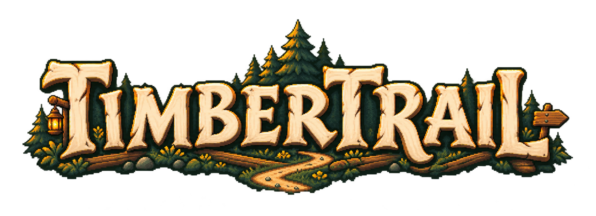
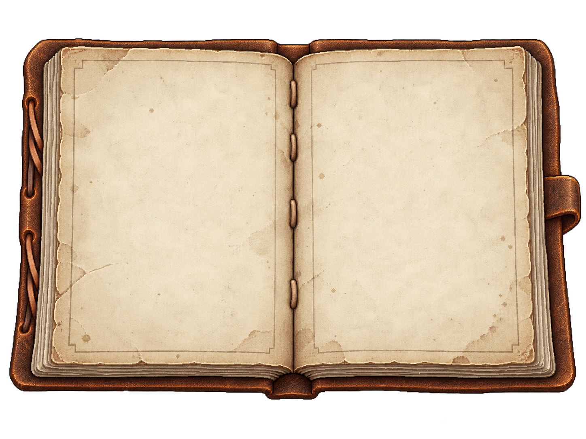

THE QUIET NORTH
Timbertrail

Polku katoaa metsään.
Sinulla ei ole kiire minnekään.
OMA POLKUSI · OMA TAHTISI
Itsenäinen eräretkiprototyyppi
K O R P I L A A K S OMetsä
Siima on vedessä…
AD liikuS kyykisty♧ klikkaa ja kerää

KAIKKI TARPEELLINEN MUKANA